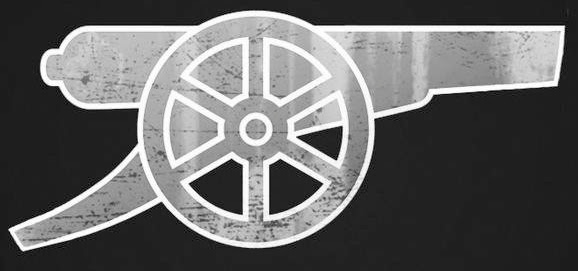

JD's Pomodoro Timer
- Pomodoro
- Short Break
- Long Break
- Loop

25:00
×
What is a Pomodoro Technique
Pomodoro Technique
- Choose a task you'd like to get done.
- Set the Pomodoro for 25 minutes.
- Work on task until the Pomodoro Timer rings.
- When the timer rings, put a checkmark on paper.
- Take a Short break.
- Every 4 pomodoro's, take a longer break.
Wiki Link: Detailed Explaination of Pomodoro Technique